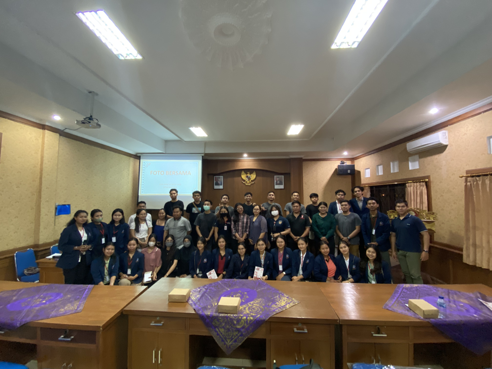

Program Sosialisasi Penyakit Menular yang dijalankan oleh Mahasiswa KKN-PPM Ke-VI
Universitas Bali Internasional 2023 di Desa Mambal, Kecamatan Abiansemal, Kabupaten
Badung, memiliki fokus yang sangat penting yaitu kesehatan reproduksi remaja. Program ini
menargetkan para remaja dari Banjar Trijata dan Banjar Lebah Sari.
Kesehatan Reproduksi: Pentingnya KesPro
Kesehatan reproduksi, atau yang dikenal sebagai kespro, mencakup aspek fisik, mental,
dan sosial yang berkaitan dengan fungsi, peran, dan sistem reproduksi seseorang. Dalam
kalangan remaja, masalah kesehatan reproduksi sering kali terkait dengan pola pacaran
yang tidak sehat dan praktik free sex. Salah satu ancaman utama adalah HIV/AIDS (Human
Immunodeficiency Virus/Acquired Immune Deficiency Syndrome). Individu yang terkena
HIV/AIDS sering mengalami diskriminasi dan stigmatisasi dari masyarakat karena perilaku
mereka dianggap tidak bermoral dan sulit diterima. ...
Peran Keluarga dalam Kesehatan Reproduksi
Kurangnya dukungan dari keluarga dapat memperburuk kondisi penderita dan berdampak
negatif pada kesehatan mental mereka. Untuk mencegah hal ini, langkah-langkah seperti
mematuhi nilai-nilai agama, berpartisipasi dalam program generasi berencana, dan
mendapatkan pendidikan mengenai kesehatan reproduksi sangat penting. Pemahaman mendalam
tentang penyakit menular adalah kunci untuk mengurangi jumlah kasus yang terjadi.
Meningkatkan Kesadaran Melalui Sosialisasi
Program sosialisasi ini diselenggarakan untuk meningkatkan kesadaran akan pentingnya
menjaga kesehatan reproduksi, terutama di kalangan remaja. Tujuannya adalah untuk
meningkatkan pengetahuan tentang kesehatan reproduksi, penyakit menular, serta cara-cara
pencegahannya.
Pesan Penting untuk Masyarakat
Melalui artikel ini, kami berharap pembaca dapat lebih memahami konsep kesehatan
reproduksi, penyakit menular, dan langkah-langkah pencegahannya. Upaya ini bertujuan
untuk membantu mengurangi kasus penyakit menular yang terjadi. Kesehatan reproduksi
adalah hak asasi setiap individu, dan pemahaman yang lebih baik adalah langkah awal yang
penting dalam melindungi generasi muda dan memastikan masa depan yang lebih sehat dan
cerah. Dalam dunia yang terus berubah, investasi dalam pemahaman ini adalah investasi
dalam kesejahteraan masyarakat.